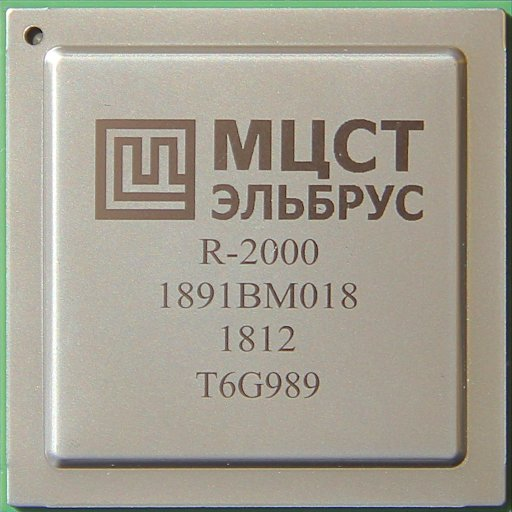
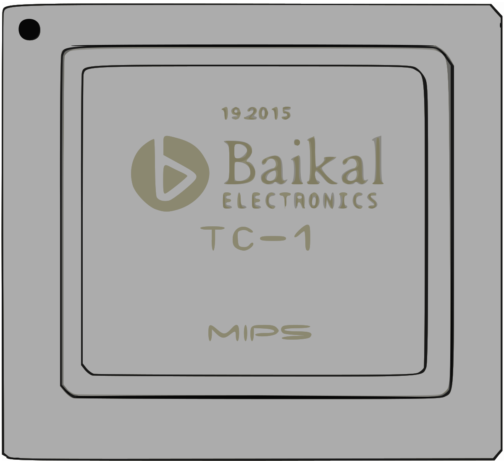
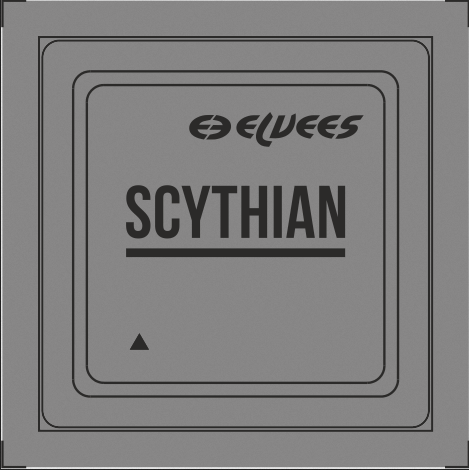

"Россия имеет все необходимые предпосылки для развития собственной вычислительной техники: научный потенциал, инженерные кадры и исторический опыт. Однако для успешного конкурирования на мировом уровне требуется не только технологический прорыв, но и системная поддержка со стороны государства, а также интеграция усилий науки, образования и промышленности"
При рассмотрении вопроса вычислительной техники России стоит начать с определений
Сначала определим общие термины:
- Вычислительная техника
- Совокупность технических средств, в том числе электронных, для решения вычислительных задач
- Аппаратное обеспечение
- Совокупность технических средств вычислительной техники
- Программное обеспечение
- Программа или множество программ, используемых для управления компьютером
- Встроенное программное обеспечение
- Содержимое энергонезависимой памяти любого цифрового вычислительного устройства — видеокамеры, микрокалькулятора, сотового телефона, GPS-навигатора и т. д., в которой содержится его программа
- Теоретическая подготовка
- Разработка математических основ вычислений
- Создание алгоритмических моделей (например, машина Тьюринга)
- Формулировка принципов работы вычислительных устройств
- Определение структуры ЭВМ
- Определение структуры ЭВМ
- Процессор
- Память
- Устройства ввода-вывода
| Год | Событие / Система | Разработчик | Ключевые характеристики | Значение |
|---|---|---|---|---|
| 1992–1995 | Эльбрус-3 | ИТМиВТ (Москва) | Суперкомпьютер на специализированных микропроцессорах, архитектура VLIW | Один из последних советских/российских проектов перед кризисом 1990-х |
| 1998 | МЦСТ-R100 | МЦСТ (Московский центр SPARC-технологий) | Первый российский микропроцессор на архитектуре SPARC v8 (16 МГц). Начало разработки отечественных процессоров | |
| 2001 | Эльбрус-2000 (E2K) | МЦСТ / ИТМиВТ | 64-разрядный VLIW-процессор с архитектурой "Эльбрус", поддержка бинарной трансляции x86 | Попытка создать полностью российскую архитектуру |
| 2007 | СКИФ Cyberia (Томск) | ТГУ, Роснано, Интел | Суперкомпьютер на базе Intel Xeon, 9 TFlops | Первый российский суперкомпьютер в топ-500 мирового рейтинга |
| 2010 | Ломоносов (МГУ) | МГУ, Роснано, T-Platforms | Суперкомпьютер (1.7 PFlops), на базе Intel и NVIDIA | Один из мощнейших суперкомпьютеров в мире на момент запуска |
| 2014 | Байкал-T1 | Baikal Electronics | 32-разрядный MIPS-процессор (1.2 ГГц), энергоэффективный | Первый коммерческий российский процессор для сетевых устройств |
| 2015 | Эльбрус-4С | МЦСТ | 4-ядерный процессор (800 МГц), архитектура Эльбрус, совместимость с x86 через трансляцию | Развитие линейки для госсектора и оборонных задач |
| 2018 | Суперкомпьютер "Кристофари" (Сбербанк) | SberCloud, NVIDIA | 9 PFlops, на базе NVIDIA DGX-2 | Самый мощный коммерческий суперкомпьютер в России на тот момент |
| 2020 | Байкал-M | Baikal Electronics | 8-ядерный ARM-процессор (1.5 ГГц), 28 нм, для ПК и серверов | Попытка создания массового отечественного процессора |
| 2021 | Эльбрус-16С | МЦСТ | 16-ядерный процессор (2 ГГц), поддержка DDR4, PCIe 3.0 | Увеличение производительности для серверных решений |
| 2022 | Цифровая платформа "Марс" | Ростех, Yadro | Российские серверы на базе ARM- и RISC-V-процессоров | Развитие импортозамещающих решений после санкций |
| 2023 | Суперкомпьютер "Черняховский" (МФТИ) | МФТИ, Росatom | 21 PFlops, на базе процессоров "Эльбрус" и NVIDIA | Один из мощнейших в России для научных расчетов |
| 2024 | Процессор "Скиф" (RISC-V) | СКИФ-Процессоры | 12-нм техпроцесс, 4–8 ядер, для встраиваемых систем | Развитие открытой архитектуры RISC-V в России |
| Итого событий / систем | 13 | |||
 
После распада СССР российская компьютерная индустрия столкнулась с серьезными вызовами: разрыв производственных цепочек, сокращение финансирования и конкуренция с западными технологиями. Однако, несмотря на трудности, в России продолжилось развитие вычислительной техники, включая суперкомпьютеры, микропроцессоры и программное обеспечение.
Предок удалился. Необходимо перекомпилировать ядро... Нажмите F51990-е: Кризис и первые попытки возрождения
В начале 1990-х завершились разработки, начатые еще в СССР. Одним из последних советских проектов стал суперкомпьютер "Эльбрус-3" (1994), созданный в ИТМиВТ под руководством Бориса Бабаяна. Это была уникальная система с архитектурой VLIW (очень длинное командное слово), но из-за экономического кризиса массового производства не случилось.
В 1998 году Московский центр SPARC-технологий (МЦСТ) представил первый российский микропроцессор МЦСТ-R100 на архитектуре SPARC. Хотя его тактовая частота (16 МГц) сильно уступала западным аналогам, это был важный шаг в развитии отечественной микроэлектроники.
2000-е: Суперкомпьютеры и новые процессоры
В 2000-х годах Россия сделала ставку на суперкомпьютерные технологии. В 2007 году в Томском госуниверситете запустили СКИФ Cyberia (9 TFlops), который вошел в мировой топ-500. В 2010 году в МГУ заработал "Ломоносов" (1.7 PFlops) — один из мощнейших суперкомпьютеров того времени.
Параллельно развивались отечественные процессоры. "Эльбрус-2000" (E2K, 2001) стал 64-разрядным процессором с поддержкой бинарной трансляции x86-кода. "Байкал-T1" (2014) — первый коммерческий российский чип на архитектуре MIPS для сетевых устройств.
2010-е: Импортозамещение и новые вызовы
После 2014 года, на фоне санкций, Россия начала активнее развивать собственные технологии. В 2015 году МЦСТ выпустил "Эльбрус-4С" (4 ядра, 800 МГц), а в 2018-м Сбербанк представил суперкомпьютер "Кристофари" (9 PFlops) на базе NVIDIA.
В 2020 году компания Baikal Electronics выпустила "Байкал-M" — 8-ядерный ARM-процессор для ПК и серверов. Однако из-за ограниченного производства и проблем с техпроцессом (28 нм) он не смог стать массовым.
2020-е: Санкции и переход на RISC-V
После 2022 года российская IT-индустрия столкнулась с новыми ограничениями: запрет на поставки Intel, AMD и NVIDIA, а также отключение от ARM. В ответ начался активный переход на открытые архитектуры, такие как RISC-V. "Скиф" (2024) стал первым российским RISC-V процессором для встраиваемых систем. "Марс" (2022) — серверная платформа на базе ARM и RISC-V от "Ростеха" и Yadro.
Также продолжилось развитие суперкомпьютеров: в 2023 году МФТИ запустил "Черняховский" (21 PFlops), частично использующий российские процессоры "Эльбрус".
Выводы и перспективы
За 30 лет российская вычислительная техника прошла сложный путь. В 1990-е годы наблюдался упадок после распада СССР, но научный потенциал сохранился. В 2000-е произошло развитие суперкомпьютеров и первых российских процессоров. 2010-е годы ознаменовались попытками импортозамещения на фоне санкций. В 2020-е начался вынужденный переход на RISC-V и другие открытые стандарты.
Главные проблемы сегодня — нехватка современных производственных мощностей (российские чипы делают на устаревших 28–65 нм техпроцессах) и зависимость от зарубежных компонентов. Однако в долгосрочной перспективе развитие RISC-V и квантовых вычислений может дать России новые возможности.